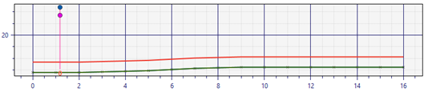
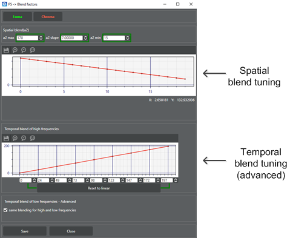

Temporal Filtering (TF) removes unwanted frequencies (noise) within an
image.
Tune ANR.
-
On the Pipeline tab, click
TF and then click a region in the
Regions group.
-
Click Load MCC Images
and load the preferred image sequence with a minimum of 10 frames.
-
Click Load Flat Image
and load a flat field image.
-
Click Calibrate.
-
Click Calibrate LNR to
run lens-dependent noise reduction (LNR). To manually adjust the LNR, see (Advanced) Lnr Setting.
-
Click Load Test Image and select a video file or
sequence or images (select frame _0).
-
Select the number of frames to review and click
Run!.
-
Compare the final images of frames 0 and the last frame. The
last frame should have less noise.
-
Compare the ANR image and the final image from TF. The final
image should have less noise and more details.
Basic Level
-
In the Configuration
group, click Basic Level.
-
Adjust the Spatial Noise
Reduction luma and chroma values as needed.
-
Adjust the Temporal Noise
Reduction luma and chroma values as needed.
-
Adjust the Motion
Detection luma and chroma values as needed for 1:16
scale and 1:4 scale.
-
From the reserved parameters, select the High Quality (High Power) Mode check
box to enable 1:1 scale luma and chroma adjustments, if necessary.
-
Click Save to
retain all changes.
-
Click Close to
return to the main TF tuning screen.
Base Functions
-
In the Configuration
group, click Base Functions.
-
Tune the gain from lowest pass to highest (i.e., DC16
> DC4). Full resolution is required only in High Quality mode and D64
is not required for videos.
If an issue arises, find the lowest pass where the
issue occurs, place a point of interest (POI), and try to resolve the
issue.
DC64s typically do not require tuning.
-
Add POI markers on stationary and moving
objects.
The I marker shows the highest and lowest derivatives
around the POI and helps separate noise from details. Stationary object
POIs should be below the green FS=Max line. Moving objects should be above the red
FS=0 line.

-
Adjust the FS=Max and FS=0
lines using the Gain controls (+
and -).
-
Assess the tuning quality by looking at the filtering
strength (FS).
Moving objects should have an FS of 0. Stationary
objects should have an FS of 63.
Blend Factor
-
In the Configuration
group, click Blend Factor.
-
Adjust the Spatial
blend(a2) values to control the strength of TF.

The
a2 max value
should be almost 100% where lower values restore fine details on moving
objects.
The a2
min value adjusts the amount of spatial denoising to add to
temporal denoising on stationary objects. For a weaker value, use 0%. For
noisy videos, a value of up to 70% may be required.
(Advanced) Options
-
In the Configuration
group, click Options.
-
Set DisableChromaGhostDetection if there is not
enough data for chroma tuning (e.g., no color chart).
-
Adjust the ErodeFilterSize and DilateFilterSize values as needed.
0 = disabled; 1 = 5x5; 2 = 3x3.
If
the erode filter value is larger than the dilate filter value, there
are less ghost artifacts. If the erode filter value is equal to the
dilate filter, there is more noise reduction on moving objects. The
erode filter value cannot be smaller than the dilate filter
value.
-
Adjust BlockNumX,
BlockNumY, and
trDeadZone as needed.
For warping transform refinement, enable
trEnable in the DC16 and DC4 tabs. To assess
the image alignment quality, compare the current image with the previous
image in the Full tab.
For BlockNumX and
BlockNumY, the image with
trEnable enabled should appear better.
Decrease BlockNumX and
BlockNumY if the images appear the same or
worse. If BlockNumX and
BlockNumY are 1 and are still worse, set
trEnable to 0.
If ANR tuning changes, retune TF blending factors and
recheck TF base functions.